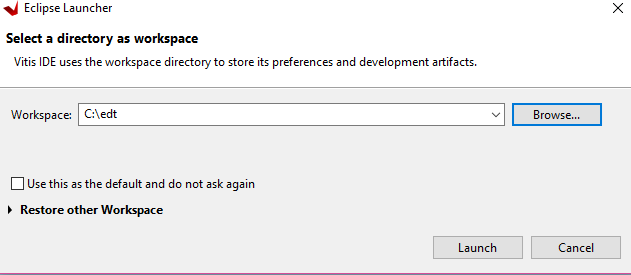
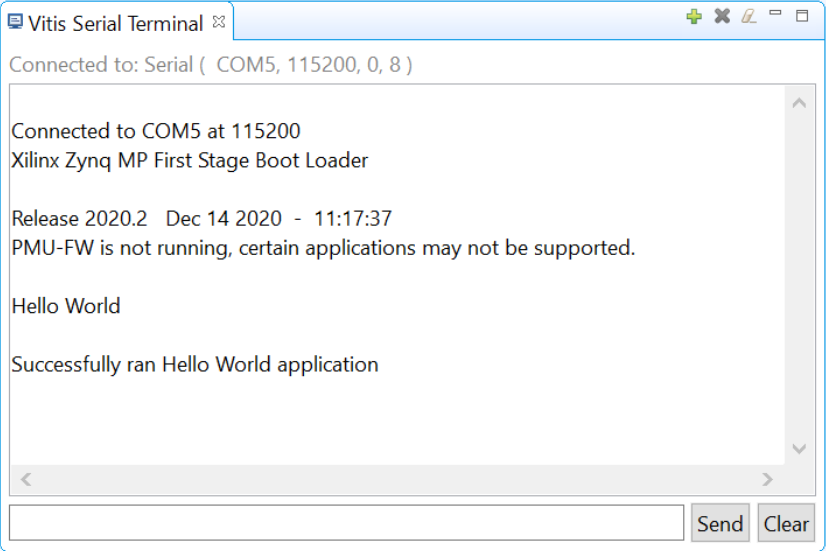
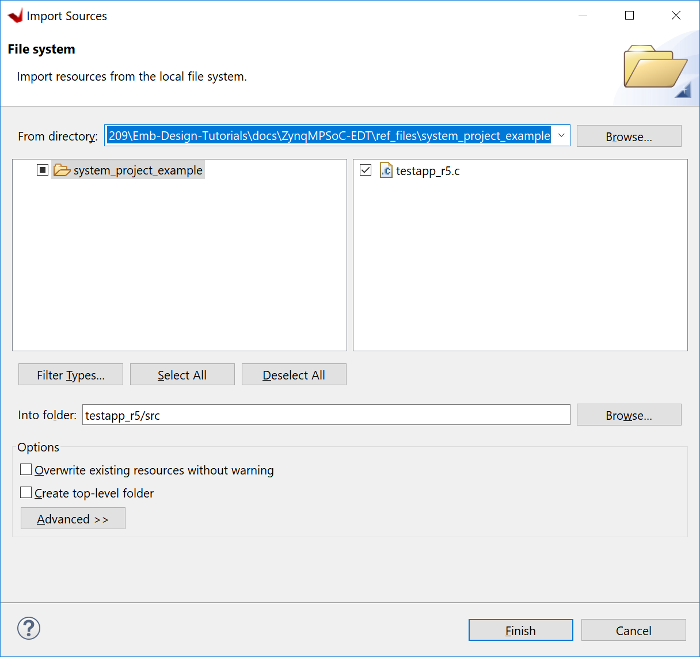
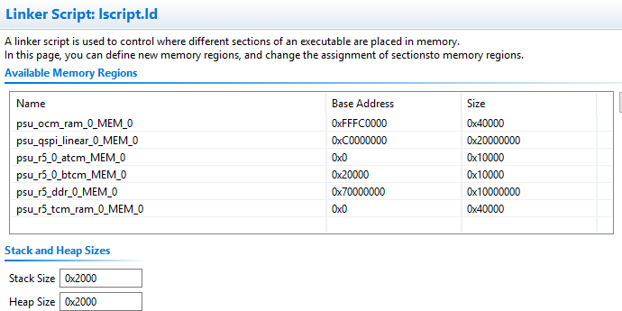
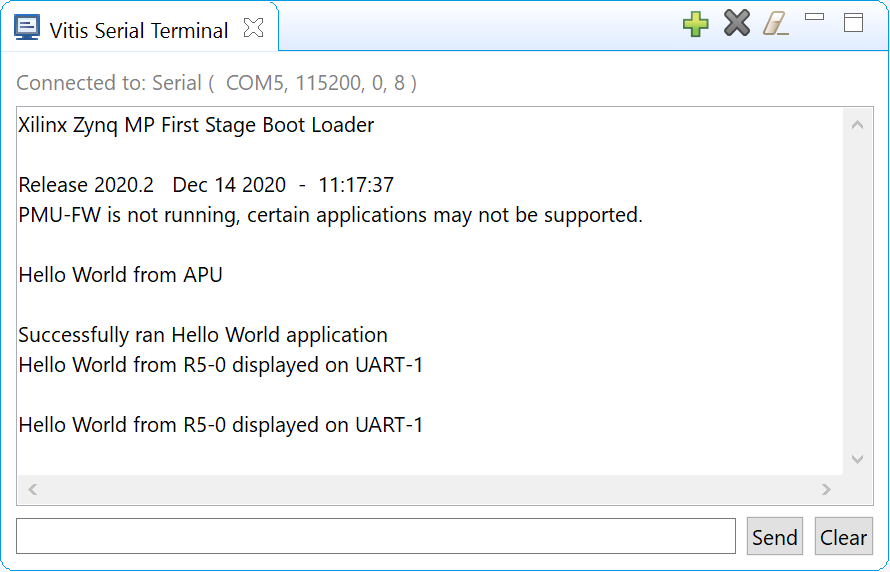

Read this page in other languages:日本語
Zync UltraScale+ MPSoC Embedded Design Tutorial 2020.2 (UG1209) | |||||
|---|---|---|---|---|---|
| 1. Introduction | 2. Getting Started | 3. Zynq UltraScale+ MPSoC System Configuration | 4. Build Software for PS Subsystems | ||
| 5. Building Linux Applications for PS | 6. Debugging Standalone Applications | 7. Debugging Linux Applications | 8. Boot and Configuration | ||
Build Standalone Software for PS Subsystems¶
This chapter lists the steps to configure and build software for PS subsystems.
In previous chapter, Zynq UltraScale+ MPSoC Processing System Configuration, you created and exported the hardware design from Vivado. The exported XSA file contains the hardware handoff, the processing system initialization (psu_init), and the PL bitstream. In this chapter, you will import the XSA to the Vitis™ IDE to configure software for the processing system.
You will use the Vitis IDE to perform the following tasks:
Create a Platform project for the hardware XSA. First Stage Boot Loader (FSBL) and PMU firmware for PMU (platform management unit) will be created as boot components in this platform project.
Create bare-metal applications for APU.
Create a system project for APU and RPU.
Creating a Platform Project Using Vitis IDE¶
The main processing units in the processing system in Zynq UltraScale+ are listed below.
Application Processing Unit: Quad-core Arm® Cortex™-A53 MPCore Processors.
Real Time Processing Unit: Dual-core Arm Cortex™-R5F MPCore Processors.
Graphics Processing Unit: Arm Mali™ 400 MP2 GPU
Platform Management Unit (PMU): Xilinx MicroBlaze based platform management unit.
The platform project reads in hardware info from XSA file and contains the runtime environment for the above processing units. Application software can link against the libraries generated in the platform project.
Here are the steps of creating a platform project with a standalone domain for Arm Cortex-A53.
Launch the Vitis IDE
From the open Vivado IDE, click Tools -> Launch Vitis IDE; or
Click the Windows start menu -> Xilinx Design Tools -> Xilinx Vitis 2020.2; or
Double-click the
C:\Xilinx\Vitis\2020.2\bin\vitis.batfile.
Select the workspace
C\edt\edt_zcu102_workspaceand continue.
Note: If the directory doesn’t exist, Vitis will create it.
In the Vitis IDE, go to File → New → Platform Project.
In the Create New Platform page, enter the platform name
zcu102_edtand click Next.In the Platform view, go with the default tab Create from hardware specification (XSA).
Note: Select a platform from repository tab can be used when you have a pre-built platform and you’d like to copy it to local to modify it.
Click Browse… to select the XSA file exported from previous chapter.
Select the preferred operating system, processor, and architecture.
| Wizard Screen | Property |
|---|---|
| Operating System | Standalone |
| Processor | psu_cortexa53_0 |
| Architecture | 64-bit |
| Generate Boot Components | Keep it checked |
| Target processor to create FSBL | psu_cortexa53_0 |

Click Finish.
In a few minutes, the Vitis IDE generates the platform. The files that are generated are displayed in the explorer window as shown in the following figure.

There is a standalone domain in the platform under psu_cortexa53_0 processor. New applications for Cortex-A53 can link against it.
Dault domains for FSBL and PMU firmware comes with the platform project when Generate Boot Components are selected during application or platform project creation.
Users are free to add and remove domains in the platform project.
Users can customize the domain configurations.
Now build the hardware by right-clicking the platform, then selecting Build Project.

The platform project is ready. You can create applications using this
platform and test on zcu102 hardware.
> Note: The project build process will build the standlaone BSP, FSBL and PMUFW. FSBL and PMUFW has their own BSP. The build process will take some time.
Example Project 1: Running the “Hello World” Application from Arm Cortex-A53¶
In this example, you will learn how to manage the board settings, make cable connections, connect to the board through your PC, and run a simple hello world software application from Arm Cortex-A53 in JTAG mode using System Debugger in the Vitis IDE.
Board Setup¶

Connect the power cable to the board.
Connect a USB micro cable between the Windows host machine and J2 USB JTAG connector on the target board.
Connect a USB micro cable to connector J83 on the target board with the Windows host machine. This is used for USB to serial transfer.
Ensure that SW6 Switch, on the bottom right, is set to JTAG boot mode as shown in the following figure.

Power on the ZCU102 board.
Connect Serial Port¶
Open your preferred serial communication utility for the COM port.
Note: It can be any serial communication utilities in your system. The Vitis IDE provides a serial terminal utility. We will use it throughout the tutorial; select Window→ Show View → Vitis Serial Terminal in Vitis IDE to open it.
Note: On Linux, you’ll need root previliage to use UART.
Click the + button to set the serial configuration.

To find out the correct COM port, on Windows, verify the port details in the Device Manager. On Linux, check the COM port in
/devMPSoC UART-0 corresponds to COM port with Interface-0. Windows Device Manager provides a mapping between Interface-x to COM-x.

The the above example, please use COM5 for Interface-0 and Baud rate 115200.
Click the drop down menu of Port, select the port number for Interface-0 (COM5 in this example).

Keep other settings and click OK to connect.
It will show connect status in the Vitis Serial Terminal window

Create Hello World Application on ARM Cortex-A53¶
To send the “Hello World” string to the UART0 peripheral, follow these steps:
Select File→ New → Application Project. The Create new application project wizard welcome screen opens.
Click Next.
Use the information in the table below to make your selections in the wizard screens.
Table 3: New Application Project Settings for Standalone APU Application
| Wizard Screen | System Properties | Settings |
|-----------------------------|---------------------------------|-------------------------------|
| Platform | Select platform from repository | zcu102_edt |
| Application project details | Application project name | hello_a53 |
| | System project name | hello_system |
| | Target processor | psu_cortexa53_0 |
| Domain | Domain | standalone on psu_cortexa53_0 |
| Templates | Available templates | Hello World |
The Vitis IDE creates the **hello_a53_system** project in the Explorer view. **hello_a53** sits inside **hello_a53_system**.
Run Hello World on the Board¶
Right-click the hello_a53 application project and select Build to build the application.
Right-click hello_a53 and select Run as → Run Configurations.
Right-click Xilinx Application Debugger and click New Configuration.
The Vitis IDE creates the new run configuration, named Debugger_hello_a53-Default.
The configurations associated with the application are pre-populated in the Main page of the launch configurations.
Click the Target Setup page and review the settings.
Note: The board should be in JTAG boot mode before power cycling.
Power cycle the board.
Click Run.
Hello World appears on the serial communication utility in Terminal 1, as shown in the following figure.

Note: There was no bitstream download required for the above software application to be executed on the Zynq UltraScale+ evaluation board. The Arm Cortex-A53 quad-core is already present in the processing system. Basic initialization of this system to run a simple application is done by the device initialization Tcl script.
Power cycle the board and retain same connections and board settings for the next section.
What Just Happened?¶
The application software sent the “Hello World” string to the UART0 peripheral of the PS section.
From UART0, the “Hello world” string goes byte-by-byte to the serial terminal application running on the host machine, which displays it as a string.
One Step Further¶
Could you create a “Hello World” application for Arm Cortex-R5F and launch it though JTAG?
Hints:
In the New Project Wizard, you need to select proper target processor.
Additional Information¶
Here’s some explantion of the terms we used above.
Domain¶
A domain can refer to the settings and files of a standalone BSP, a Linux OS, a third-party OS/BSP like FreeRTOS, or a component like the device tree generator.
You can create multiple applications to run on the domain. A domain is tied to a single processor or a cluster of isomorphic processors (for example: A53_0 or A53) in the platform.
Board Support Package¶
The board support package (BSP) is the support code for a given hardware platform or board that helps in basic initialization at power up and helps software applications to be run on top of it. It can be specific to some operating systems with boot loader and device drivers.
TIP: *To reset the BSP source, double-click platform.prj, select a BSP in a domain, and click Reset BSP Source. This action only resets the source files while settings are not touched. To change the target domain after an application project creation, double-click the project.prj file in Explorer view. In the Application Project Settings, select Domain→Domain change option →Drop-down Domain, then select available domains for this application.
Standalone BSP¶
Standalone is a simple, low-level software layer. It provides access to basic processor features such as caches, interrupts, and exceptions, as well as the basic processor features of a hosted environment. These basic features include standard input/output, profiling, abort, and exit. It is a single threaded semi-hosted environment.
Example Project 2: Create a Bare-Metal System Application Project in the Vitis IDE¶
In this example, we will do update the hello_system project we created in Example Project 1
Modify the source code hello world application source code
Import prepared source codes for Arm Cortex-R5F
Adjust the linker script
Cortex-A53 application and Cortex-R5F application will be organized in one system application. They can be launched simultaneously.
Modify the Application Source Code of hello_a53¶
Open the helloworld.c source file for the hello_a53 application
In the Explorer view, double click helloworld.c in hello_a53 → src.
Modify the arguments in the print command, as shown below.
Print("Hello World from APU\n\r");
Save the changes
Press Ctrl + S.
Or click the Save icon on the tool bar.
Build hello_a53 application
Right-click the hello_a53 application and select Build Project.
Alternatively it can be done by clicking the save button on the tool bar.
Verify that the application is compiled and linked successfully
Console window report logs like
'Invoking: ARM v8 Print Size' aarch64-none-elf-size hello_a53.elf |tee "hello_a53.elf.size" text data bss dec hex filename 30212 2048 20676 52936 cec8 hello_a53.elf 'Finished building: hello_a53.elf.size'
The hello_a53.elf file is generated in the hello_a53 → Debug folder.
Create Custom Bare-Metal Application for Arm Cortex-R5 based RPU¶
In this session, you will create a bare-metal application for Arm Cortex-R5F based RPU. You will need to import the application source files available in the ref_files directory.
Create an empty bare-metal application for Cortex-R5F Core 0 in hello_system system project
In the Explorer View, select hello_system, right click, select New Application Project to open the New Project wizard.
Use the information in the following table to make your selections in the wizard.
Table 6: Settings to Create New RPU Application Project
| Wizard Screen | System Properties | Settings |
|-----------------------------|---------------------------------|--------------------|
| Application project details | Application project name | testapp_r5 |
| | System project name | hello_system |
| | Show all processors in hardware specification | check |
| | Target processor | psu_cortexr5_0 |
| Domain | Domain | standalone_r5 |
| Templates | Available templates | Empty application |
Click Finish.
The New Project wizard closes and the Vitis IDE creates the testapp_r5
application project in hello_system system project.
Import prepared source code for testapp_r5
In the Explorer view, expand the hello_system project to find testapp_r5 project.
Right-click the testapp_r5, and select Import Sources to open the Import view.
On the line of From directory, select Browse and navigate to the design files folder (ref_files/system_project_example).
Click OK.
Select the testapp.c file.
Click Finish.

Open testapp_r5.c in to review the source code for this application.
Double click testapp_r5.c
The application configures the UART interrupt and sets the processor to WFI mode.
Modifying the Linker Script for testapp_r5¶
In the Explorer view, expand the testapp_r5 project.
In the src directory, double-click lscript.ld to open the linker script for this project.
In the linker script, in Available Memory Regions, modify following attributes for psu_r5_ddr_0_MEM_0:
Base Address: 0x70000000
Size: 0x10000000
The linker script modification is shown in following figure. The following figure is for representation only. Actual memory regions may vary in case of Isolation settings.

This modification in the linker script ensures that the RPU bare-metal application resides above 0x70000000 base address in the DDR, and occupies no more than 256 MB of size.
Type Ctrl + S to save the changes.
Right-click the testapp_r5 project and select Build Project.
Verify that the application is compiled and linked successfully and that the
testapp_r5.elffile was generated in the testapp_r5/Debug folder.
Modifying the Board Support Package for testapp_r5¶
The ZCU102 Evaluation kit has a USB-TO-QUAD-UART Bridge IC from Silicon Labs (CP2108). This enables you to select a different UART port for applications running on Cortex-A53 and Cortex-R5F cores. For this example, let Cortex-A53 use the UART 0 by default, and send and receive RPU serial data over UART 1. This requires a small modification in the r5_bsp file.
Open platform details tab by double clicking zcu102_edt -> platform.spr
Open standalone domain BSP setting details for Cortex-R5F
Navigate to psu_cortexr5 -> standalone_r5 -> Board Support Package
Click Modify BSP Settings
Change UART settings for standalone_r5
Select Standalone tab
Change stdin to psu_uart_1
Change stdout to psu_uart_1

Click OK.
Build the psu_cortexr5_0 domain and the testapp_r5 application.
Verify that the application is compiled and linked successfully and that the
testapp_r5.elfwas generated in thetestapp_r5/Debugfolder.
Run hello_system system project on hardware¶
Setup board as Example Project 1
Connect power and USB cables for UART and JTAG
Set boot mode to JTAG boot mode
Open Serial console
Power on
Run hello_system on hardware
Right click hello_system in Explorer window, select Run As -> Launch Hardware
Message from Vitis Serial window shows prints from APU and RPU

What happened just now?
Vitis uses JTAG to control the board and did the following tasks.
Used FSBL to initialize MPSoC
Reset system
Enable RPU in split mode
Download elf to Cortex-A53_0 and Cortex-R5F_0. Put processors in suspend mode
Run applications on both processors
You can view the detailed steps by right clicking hello_system, select Run As -> Run Configurations and view the Target Setup tab.

Reviewing Bootloader Projects in the Platform¶
Reviewing FSBL in Platform¶
To review the FSBL in platform, follow these steps:
In the Explorer view, navigate to zynqmp_fsbl by expanding the zcu102_edt platform to see the FSBL source code. You can edit this source for customizations. Build the platform after code modification.
The platform generated FSBL is involved in PS initialization while launching standalone applications using JTAG.
This FSBL is created for the psu_cortexa53_0, but you can also re-target the FSBL to psu_cortexr5_0 using the re-target to psu_cortexr5_0 option in the zynqmp_fsbl domain settings.
The zynqmp_fsbl domain is created automatically if bootloader creation is enabled during platform creation.
Reviewing PMU Firmware in Platform¶
To review the PMU firmware in the platform, follow these steps:
In the Explorer view, navigate to zynqmp_pmufw by expanding the zcu102_edt platform to see the PMUFW source code.
The zynqmp_pmufw software project contains the source code of PMU firmware for psu_pmu_0. Compile and run the firmware on psu_pmu_0.
The psu_pmu_0 processor domain is created automatically for the zynqmp_pmufw software project if bootloader creation is enabled during platform creation.
© Copyright 2017-2020 Xilinx, Inc.